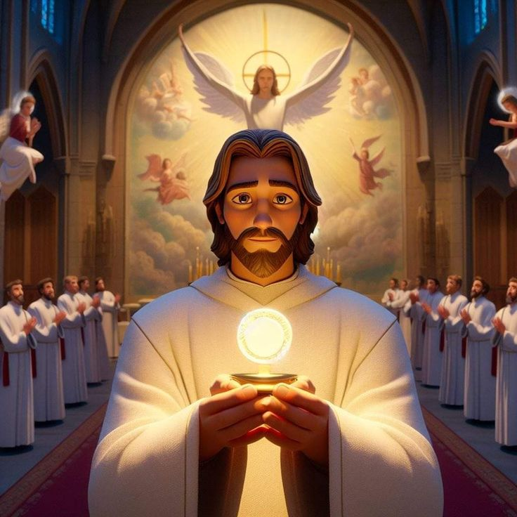
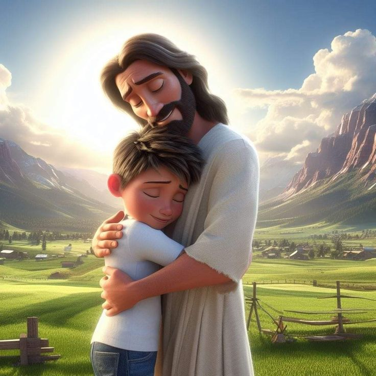

The Eucharist is the source and summit of the Christian life. The term "Eucharist" originates
from the Greek word "eucharistia", meaning thanksgiving. In the celebration of the Eucharist,
bread and wine become the body and blood of Jesus Christ through the power of the Holy Spirit
and the instrumentality of the priest. The whole Christ is truly present (body, blood, soul,
and divinity) under the appearances of bread and wine, the glorified Christ who rose from
the dead.

Jesus gives himself to us in the Eucharist as spiritual nourishment because he loves us. By
eating the body and drinking the blood of Christ in the Eucharist, we become united to him
through his humanity. "Whoever eats my flesh and drinks my blood remains in me and I in him"
(Jn 6, 56). In being united to the humanity of Christ, we are at the same time united to his
divinity. Our mortal and corruptible natures are transformed by being joined to the source
of life.
